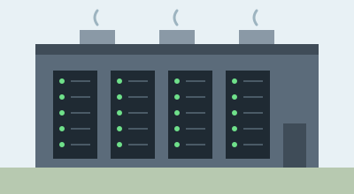

La sobriété numérique
Pourquoi réduire notre impact numérique ?
Des équipements qui consomment de l'énergie
Nos appareils et les centres de données utilisent de l'énergie pour stocker
et transmettre les informations.
Les bons gestes au quotidien
Quelques habitudes simples
- Garder ses appareils plus longtemps.
- Réduire la taille des fichiers envoyés.
- Éteindre les appareils inutilisés.
Pour aller plus loin, consultez le site de
l'ADEME.
